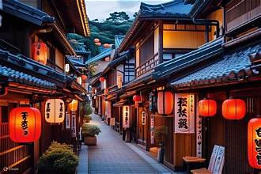
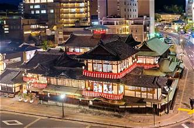

El Castillo de Tsuruga fue uno de los principales bastiones defensivos del norte de Japón.
Su importancia aumentó durante los periodos feudales al convertirse en un centro estratégico
y administrativo.
Higashiyama

Horario de apertura
08:30 - 18:00 horas
Contacto
Teléfono: +81 234 567 890
Cómo llegar
Autobuses turísticos desde la estación central.
Reseña histórica
Higashiyama conserva el aspecto tradicional del antiguo Kioto, ofreciendo una visión
única de la arquitectura y costumbres japonesas durante siglos.
Matsuyama

Horario de apertura
09:00 - 17:30 horas.
Contacto
Teléfono: +81 3245 678 901
Cómo llegar
Tranvía y teleférico desde el centro urbano.
Reseña histórica
El Castillo de Matsuyama es uno de los castillos mejor conservados de Japón,
siendo un importante testimonio de la época feudal japonesa.